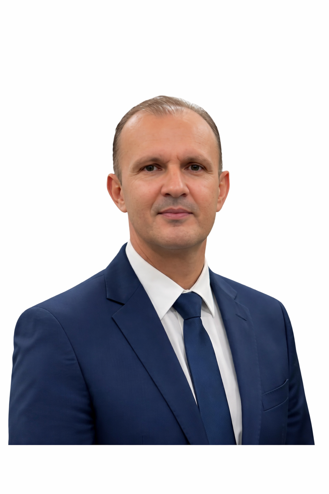

Sobre o Autor

Gilberto Moreira é um pesquisador dedicado ao estudo de temas escatológicos.
Seu trabalho foca no suporte comportamental prático através de uma perspectiva
teísta e bíblica, buscando oferecer clareza e auxílio emocional diante dos
desafios descritos nas Escrituras para os tempos atuais.
Voltar ao Menu